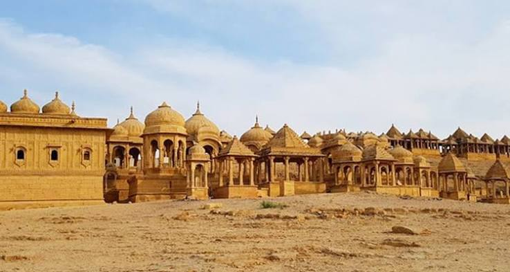
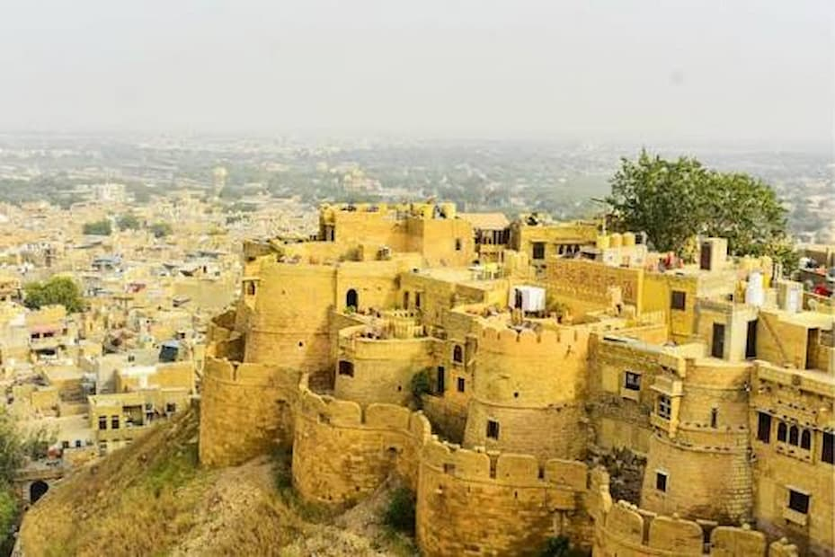
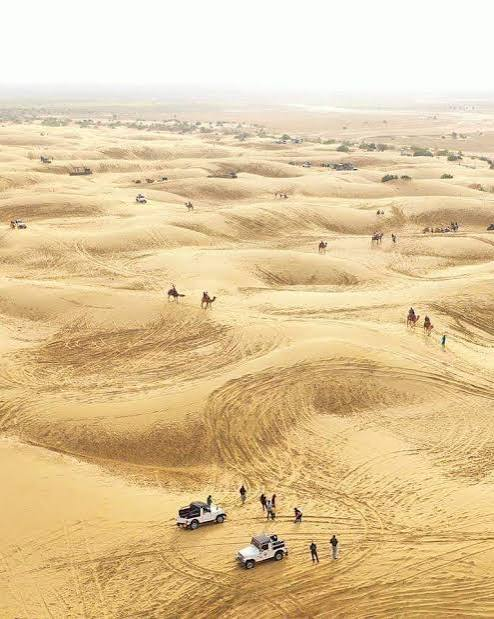

Jaisalmer Local TourJaisalmer · Rajasthan
City sightseeing
Jaisalmer Local Tour
See Jaisalmer Fort, Patwon ki Haveli, Salim Singh ki Haveli and Gadisar Lake based on your schedule.
Enquire for this tour →Select a tour to open the contact form with your requested destination already selected.

See Jaisalmer Fort, Patwon ki Haveli, Salim Singh ki Haveli and Gadisar Lake based on your schedule.
Enquire for this tour →
Explore the golden sandstone fort and nearby heritage streets. Entry tickets or guide services, if required, are separate unless confirmed.
Enquire for this tour →
Ask about a day-trip plan to Tanot Mata Temple and Longewala. Access is subject to current permission and rules.
Enquire for this tour →
Arrange a transfer to Sam. Desert activities, camel rides and jeep safaris may have separate charges.
Enquire for this tour →
Add a visit to Kuldhara Village to your local route, subject to available time and the itinerary agreed.
Enquire for this tour →
Contact us to discuss the pickup point, route and stops for your customised desert visit.
Enquire for this tour →Tell us your travel date, number of passengers, pickup location and preferred places. We will discuss an appropriate route and share fare details before you confirm. No prices or inclusions are assumed on this page.